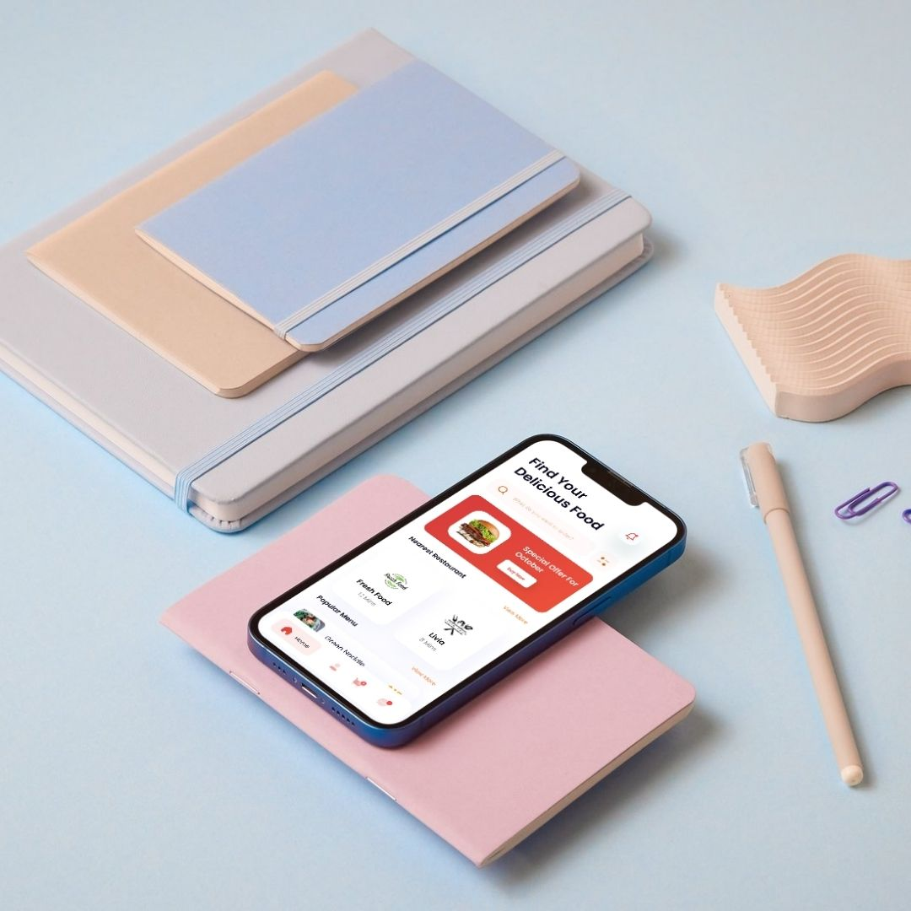
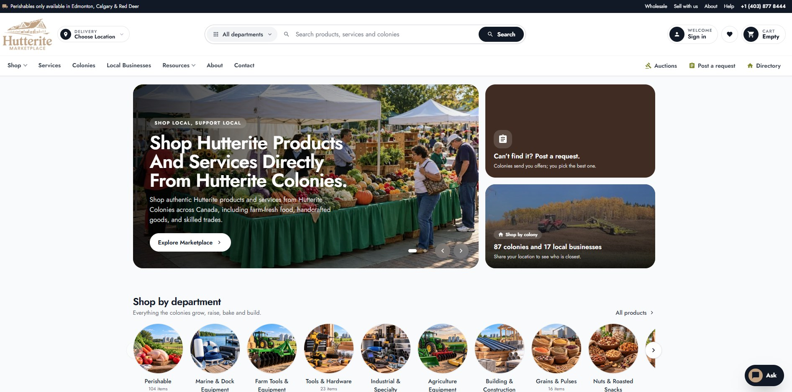
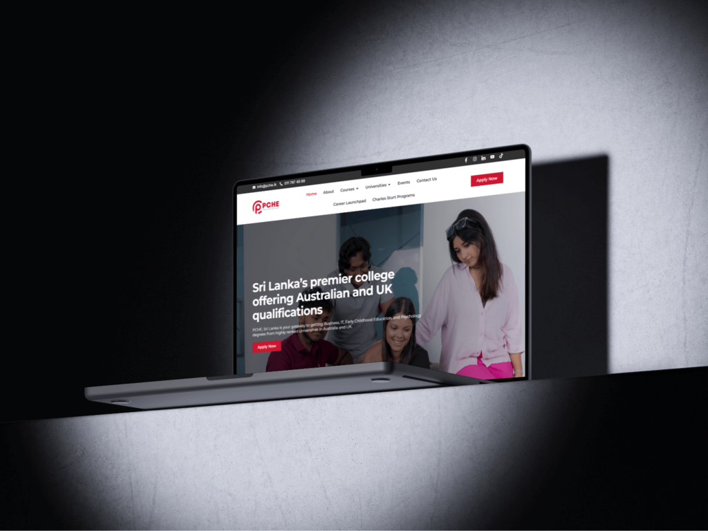
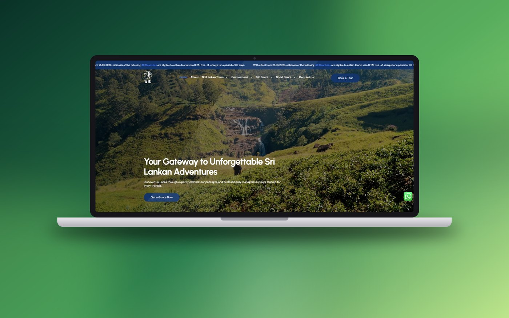
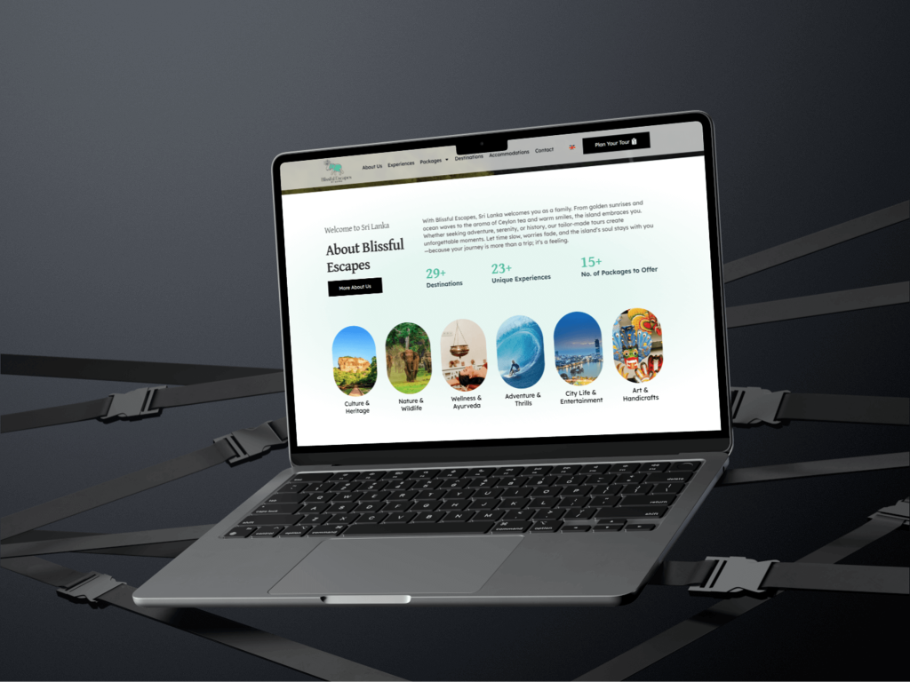
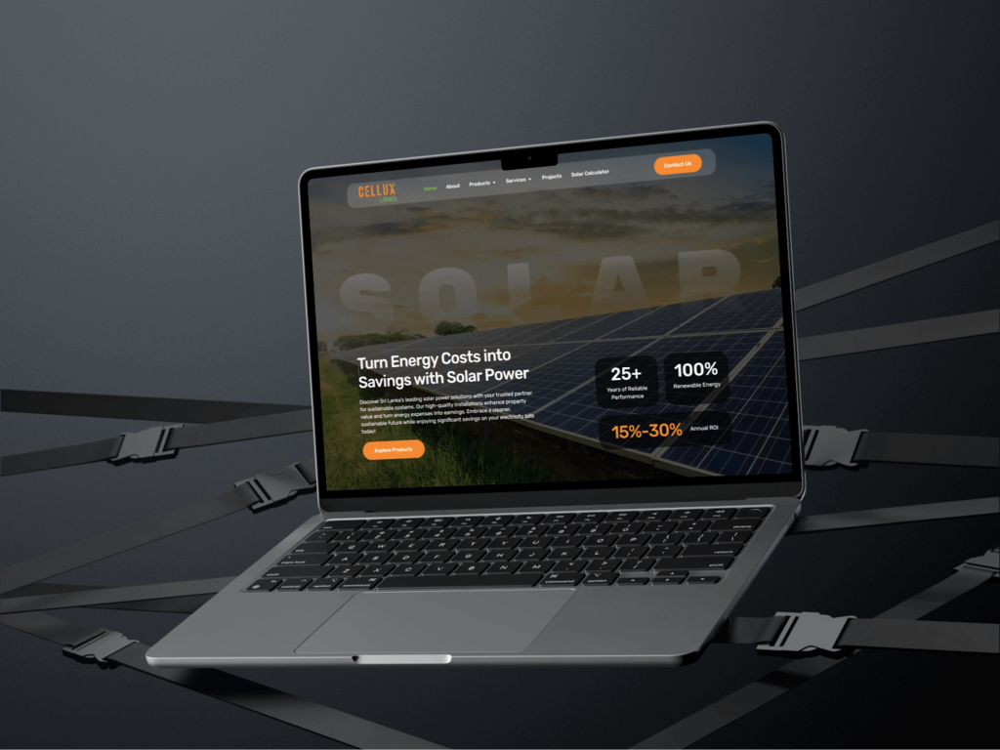
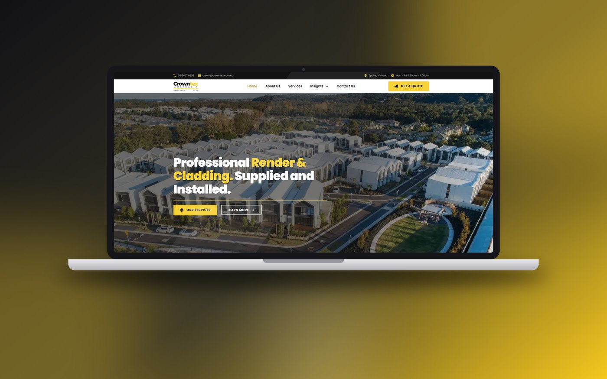
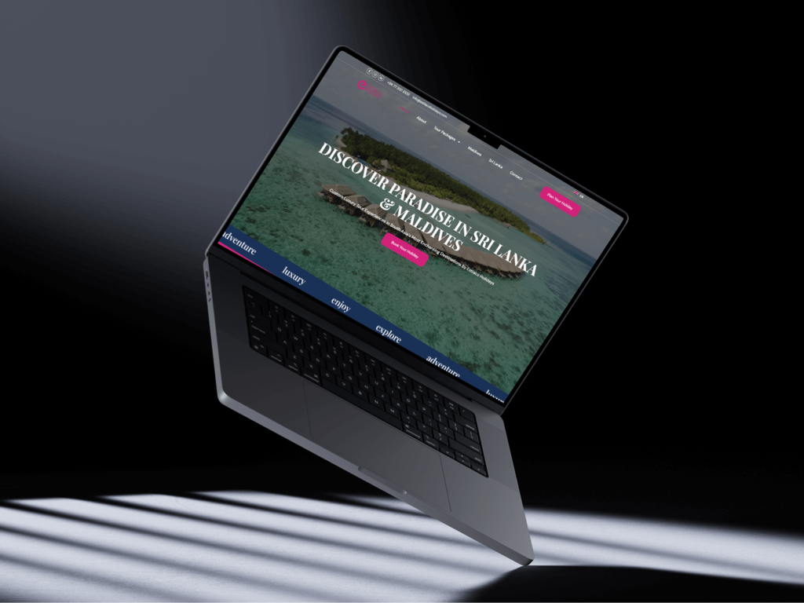

01 / DESIGN
Think · Shape · Create
Product & UI/UX Design
Turning ideas into clear, useful and engaging digital experiences — from early concepts to polished interfaces.
Open to new projects · 2026
UI/UX Designer — Colombo, Sri LankaDesigning with purpose. Building with people in mind.
I’m Pasindu — a UI/UX designer with 4+ years of experience, turning research, ideas and business goals into intuitive websites, web apps and SaaS products. I use AI to work smarter, iterate faster and create better design outcomes.

Mobile product designFood Cafe↗
Marketplace experienceHutterite↗Main skills
From interface design to a live website — the skills I use most, in one place.
Think · Shape · Create
Turning ideas into clear, useful and engaging digital experiences — from early concepts to polished interfaces.
Design · Develop · Launch
Building responsive websites and interactive pages with a focus on usability, clean layouts and smooth navigation.
Create · Connect · Grow
Creating content and marketing campaigns that help brands communicate clearly and reach the right audience.
A cohesive library of reusable components, clear type and color foundations, and polished mobile patterns.
A scalable interface concept for analytics, team workflows and confident workspace administration.
A focused ride-booking experience that helps people choose a ride, follow its progress and meet their driver.
Selected work
Every project below started as a business problem before it became an interface. Here's how two of them got solved.
End-to-end UX for a Canadian food delivery app — research, design system and high-fidelity UI.
A comprehensive e-commerce platform designed for a unique community brand. Password protected.
Gallery
A few more client projects from recent work, shown end to end rather than broken into individual flows.

01COMPANY WEBSITEPCHEView live website ↗
02CORPORATE WEBSITEWTC ColomboView live website ↗
03HOSPITALITYBlissful EscapeView live website ↗
04DIGITAL EXPERIENCECelluxView live website ↗
05E-COMMERCECrowntexView live website ↗
06TRAVEL & HOSPITALITYEstiaco TravelView live website ↗A little about me
I’m Pasindu — a designer who enjoys connecting the dots between people, products and technology. Scroll through the way I think about my work.
THE THINKER
I start by understanding people, their goals and the context around a problem. Research notes, behavioural psychology and thoughtful questions help me find the real need behind a request.
THE SYSTEMS THINKER
My background spans product design, front-end implementation and business analysis. I think about flows, components, edge cases and technical constraints — not just how one screen looks.
THE COLLABORATOR
I enjoy working closely with developers, clients and cross-functional teams — turning complex conversations into clear decisions, useful prototypes and thoughtful handoffs.
How I work
A collaborative process that keeps the problem, the people and the outcome connected.
DISCOVER
Audit what exists, speak with stakeholders and understand users before making assumptions.
Output Research & insightsDEFINE
Align on the core problem, map journeys and agree on what success should look like.
Output Flows & prioritiesDESIGN
Move from wireframes to prototypes, test ideas and iterate toward a clear experience.
Output Tested interfaceDELIVER
Prepare detailed handoff specs and stay close to development to protect design intent.
Output Build-ready handoffExperience
Five years across engineering, freelance and agency roles — always moving toward cleaner, more human digital experiences.
Designing conversion-focused websites and interfaces for B2B and B2C clients. Several projects improved client sales and conversions by 30–40% through strategic UI/UX and clear user flows.
Led user research and design thinking initiatives that drove a 25% increase in user retention. Built and refined design systems, and mentored intern designers on effective UX practices.
Designed user-centred web and LMS applications guided by personas and research. Collaborated with developers and business analysts, and mentored interns on design workflows.
Designed responsive WordPress websites and web applications for various clients, focusing on usability, accessibility, performance and SEO-driven results.
Supported internal systems with QA testing, API and FTP error fixes, and technical assistance across Python, JSON and AIS internal platforms.
My toolkit
Tools are part of the process, not the point. I choose what helps me think clearly, collaborate well and move an idea forward.
Kind words
Pasindu contributed his expertise in UI/UX design and proved to be an excellent team member not only during the design stage but also in project planning and development. We are extremely pleased, not just with the designs he created, but also with his interactions with fellow project team members.
Pasindu exhibited exceptional communication skills by actively listening to my ideas and offering valuable suggestions. Every design concept demonstrated his inventiveness, skillfully fusing practicality and beauty — and he consistently delivered high-quality work on schedule.
His work is not only top-notch, but also delivered on time. With modern and updated skills, he brings a fresh perspective to every project. Beyond his professional approach, he is also friendly and easy to work with.
His work is not only top-notch, but also delivered on time. With modern and updated skills, he brings a fresh perspective to every project. I wholeheartedly endorse Pasindu to anyone in need of exceptional design services.
Trusted by
Original instrumental music · Made for this portfolio